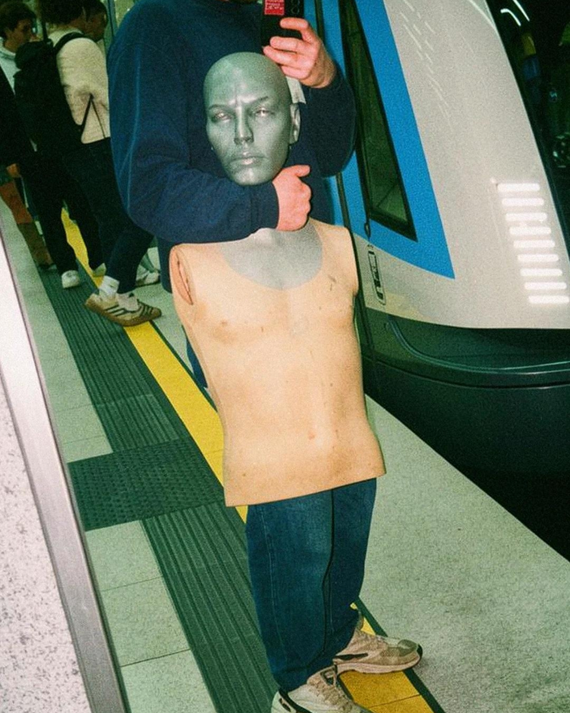
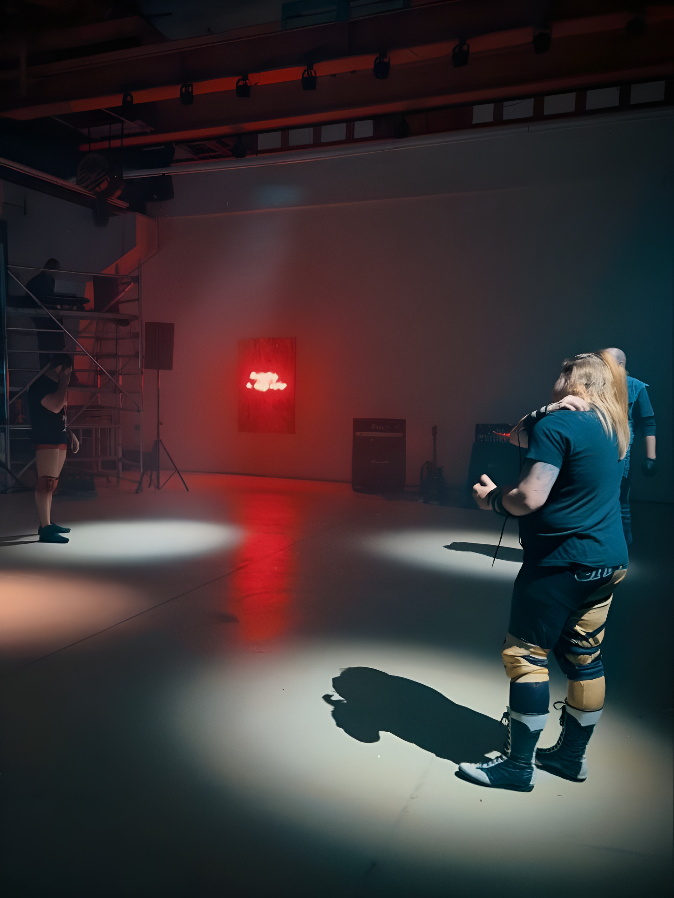
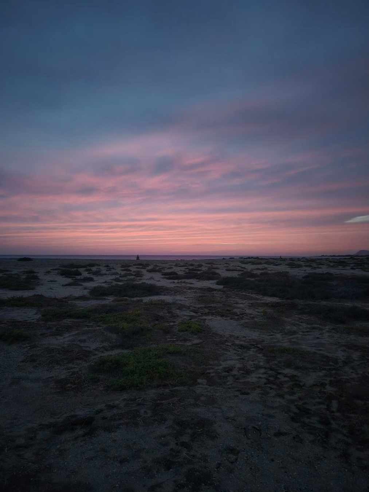
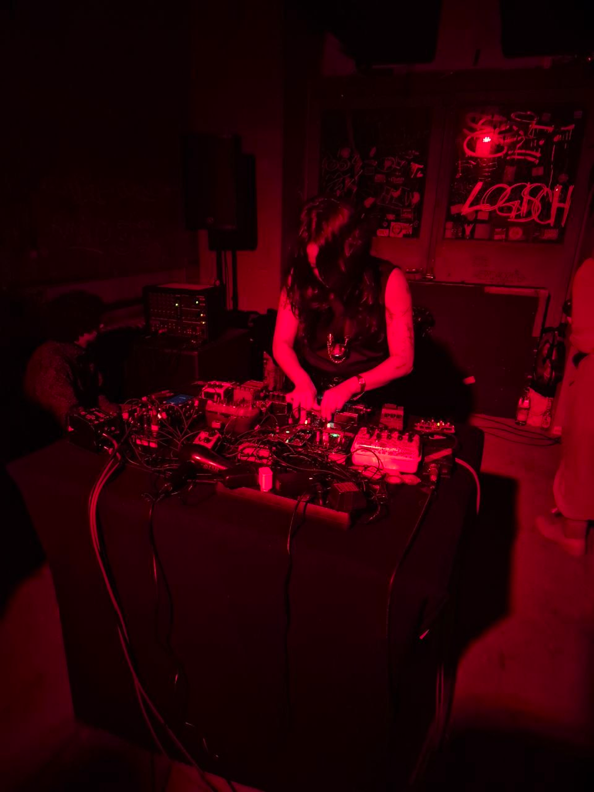
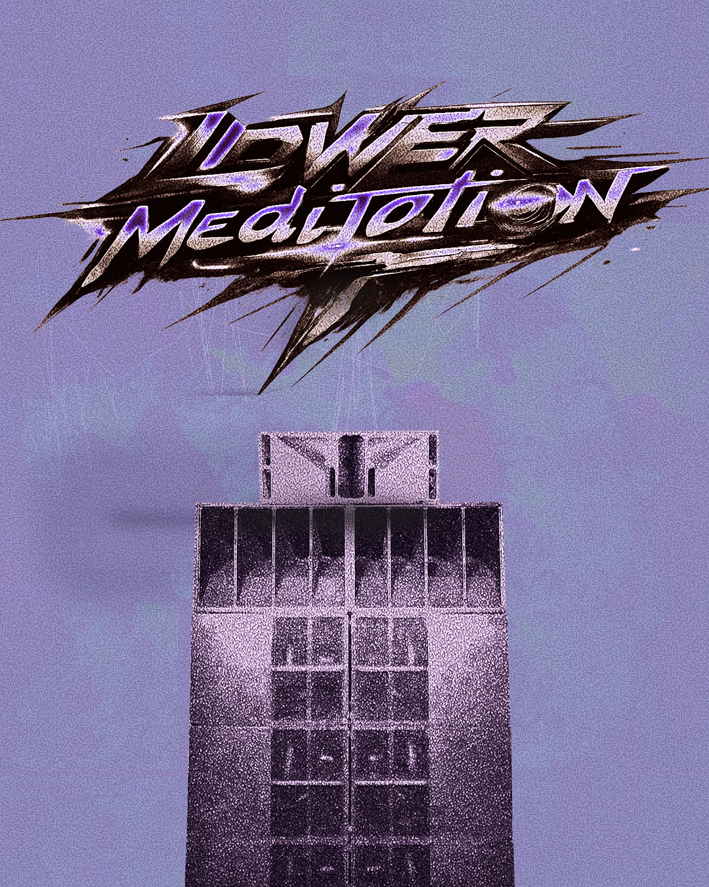
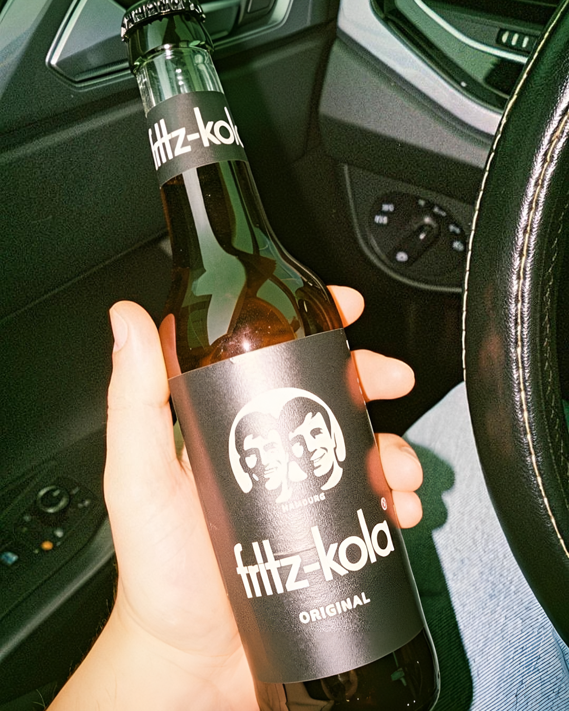
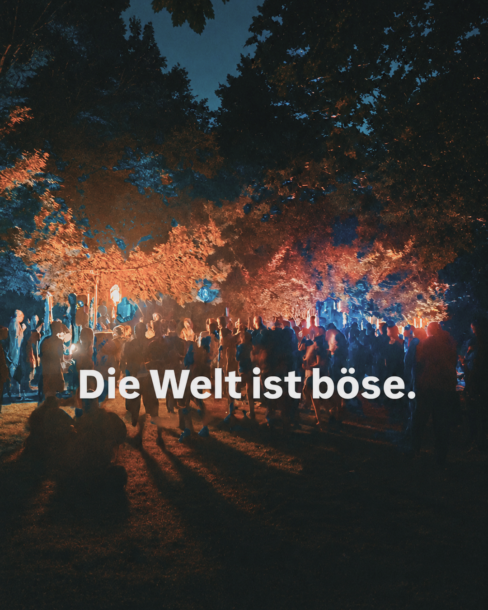
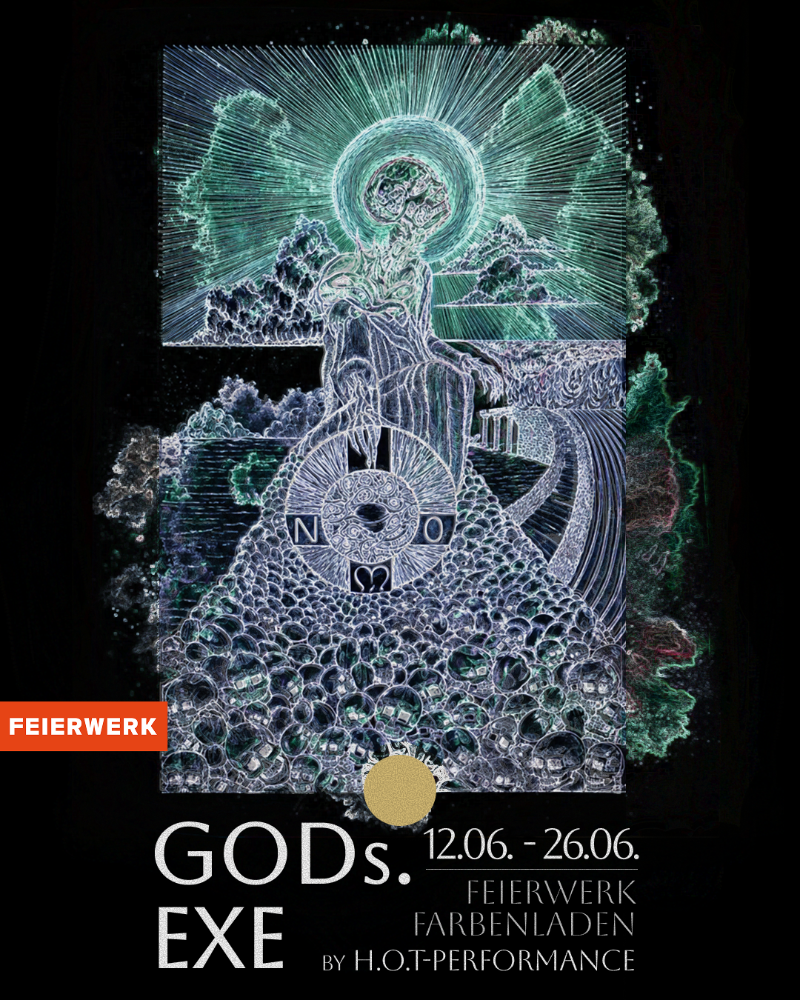

Campaigns
photography








flyer / poster






munich
fashion week
I worked as a press photographer for Munich Fashion Week, capturing runway shows, backstage moments, and on-site atmospheres over several days, displaying different showcases of designers each day. The focus was on documenting both the visual presentation of the collections and the energy behind the scenes for editorial and digital coverage.


lucky number
store


Lucky Number is a Munich-based curated vintage pop-up concept specializing in premium second-hand vintage suits with a distinctive 70s Vegas theme. I collaborated closely with the founder Simon Merkle on building a social media presence, covering events, shooting product and video edits while helping shape the campaign's brand direction. Together, we developed a clear art direction and semi-professional shooting concept centered around fine lifestyle content, creating a unique visual impulse through clean suits, bold visuals, and playful retro branding to create a distinctive identity across digital platforms.

miaac
I run the Instagram-based blog Munich in Arts and Culture where I have presented daily art and culture events from Munich since May 22, 2024. During this period the account has gained around 5,500 followers. Promoting inclusivity is important to me, so all posts are written in English to reach a broad and diverse audience. Because I feature both established galleries and alternative, underground events, this variety is reflected in the visual design.
To keep the content visually engaging, I create a completely new design every week, constantly experimenting with different themes, layouts, and visual approaches. Rather than relying on a fixed template, I use unexpected design choices to capture attention and keep the audience curious about what comes next. Some designs are inspired by local topics, such as photographing Munich's ghost bikes and building a visual concept around them, while others are created in collaboration with local artists who contribute their own work. I develop these designs using Photoshop, InDesign, and Figma.
platform expertise
Through my experience distributing content across several platforms, I am familiar with Instagram's Professional Dashboard, Facebook Business Suite, and YouTube Studio. I use these tools to plan, publish, and monitor content performance.
Analyzing insights is key to my process, allowing me to make data-driven decisions that steadily increase reach and audience engagement while refining future posts for lasting impact.